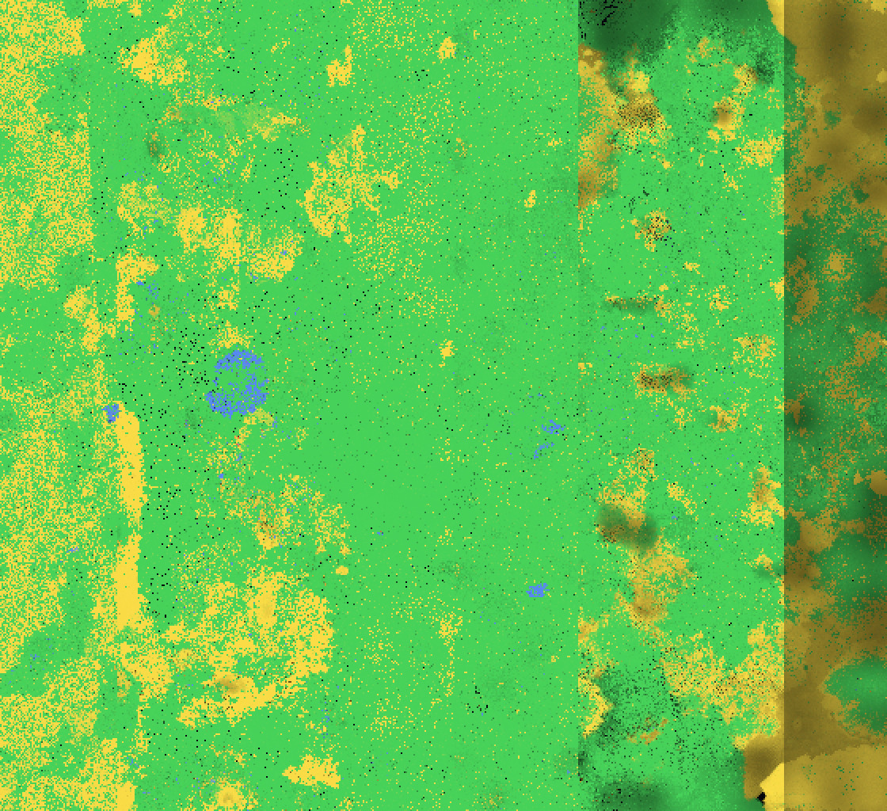
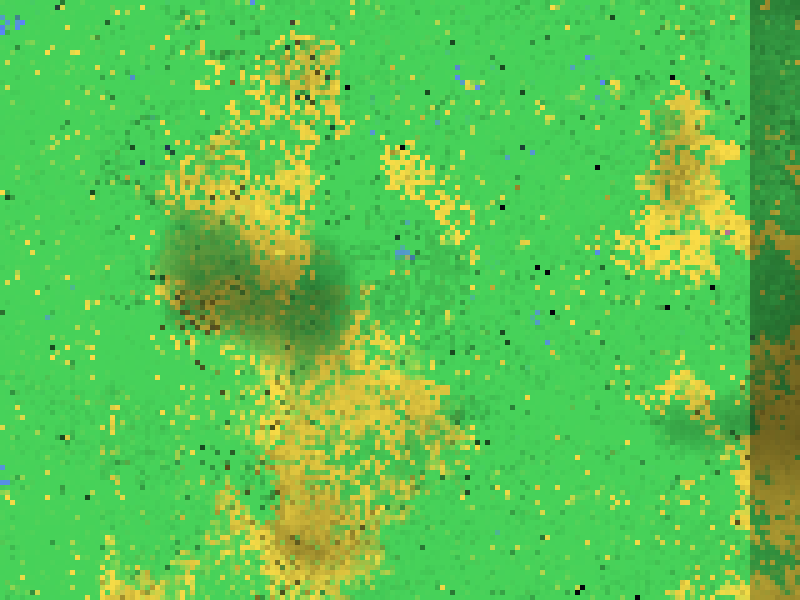
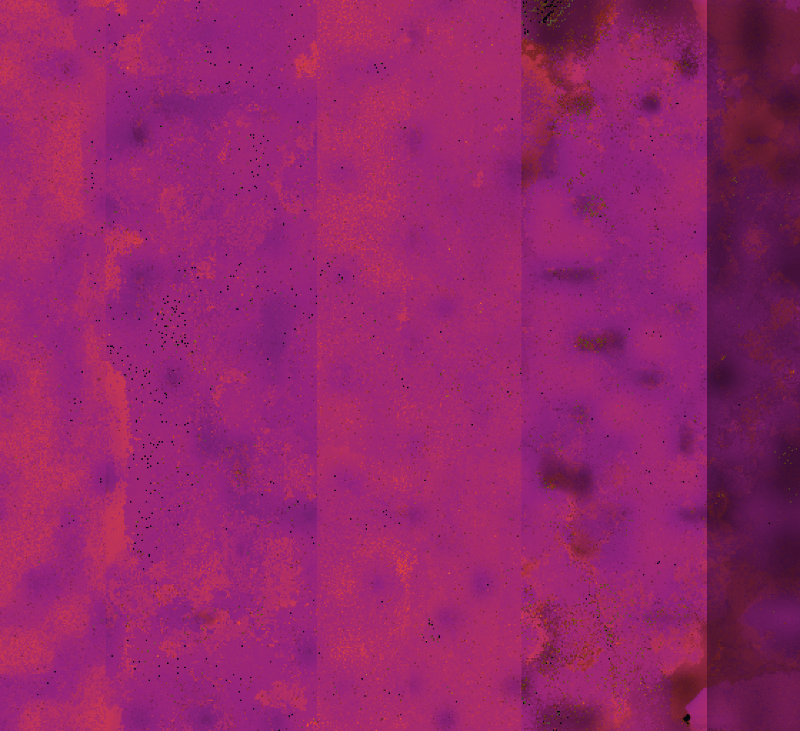
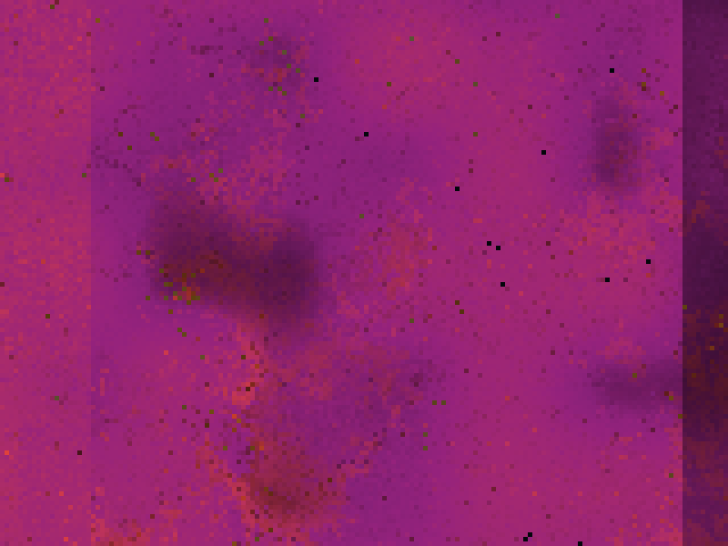
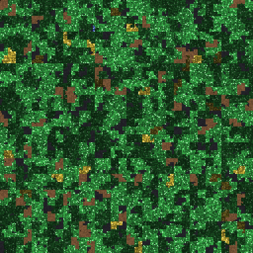
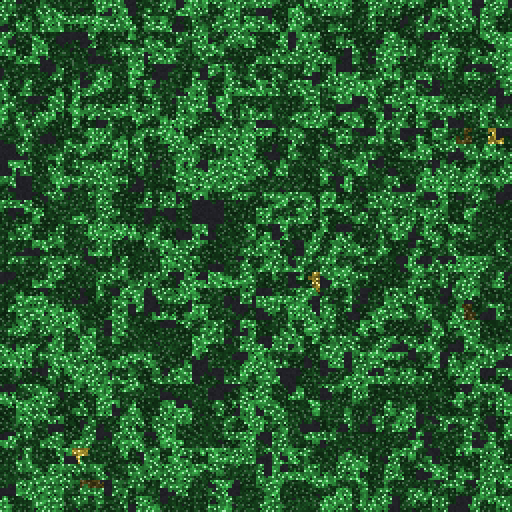

The land
The running world as the view of the project paints it: one square per region, coloured by what lives there. Every processor and every graphics card of the two machines holds a band of the land, seven bands side by side that close into a ring of 560 columns and 512 rows; the thin lines are the borders between them, where organisms cross from one band into the next.
The land over time
- plants only
- plants that also eat
- eaters only
- neither
The land now
From the census each node stores at a checkpoint, every two hours, and at a stop: all seven bands, stored between Nov 13 13:28 UTC and Nov 13 13:34 UTC. So these pictures are as old as that, unlike the film.
By what they live on
Plants, eaters, plants that eat, neither, mixed in each region by their numbers; brighter where more live.

- plants only
- plants that also eat
- eaters only
- neither

By clan
Not drawn for this start yet: the view has colours for four clans, and this world has seven, one for the founder of every band.
By reserve
The energy an organism holds in reserve, on average in its region, on a logarithmic scale.

- little in reserve
- a lot: a million flips per organism or more

A region up close
One region is 65,536 bytes. Here they are folded into a square so that bytes that follow each other in memory lie next to each other in the picture: every organism is a compact body, coloured by what it lives on, each with its own shade and a dark first byte. Dead bodies are brown, free memory is dark. These are the most populated regions of each rig in the sample of region files taken at the clean stop of 16:00 UTC on 11 November 2026.

- plants only
- plants that also eat
- eaters only
- neither

- plants only
- plants that also eat
- eaters only
- neither
Drawn with the view's own code, so the colours here are the colours of the view and of the nodes' maps.